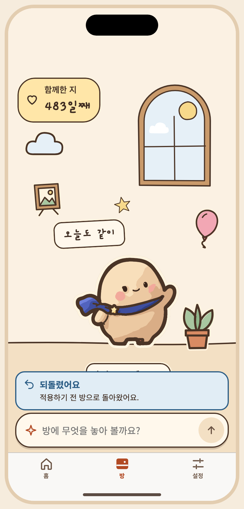
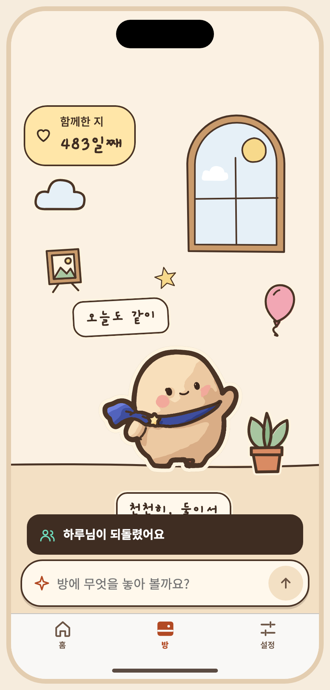
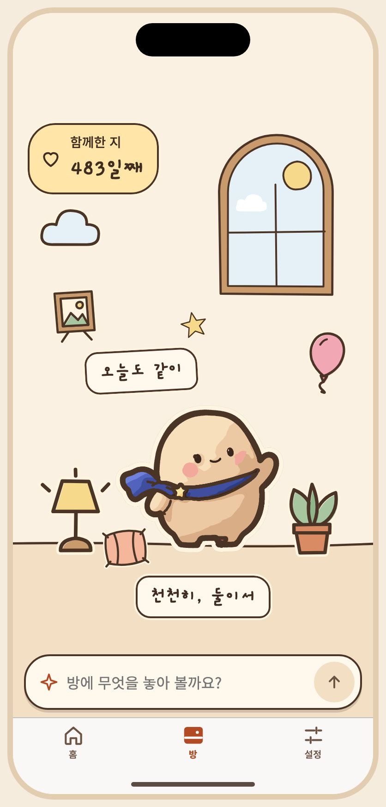
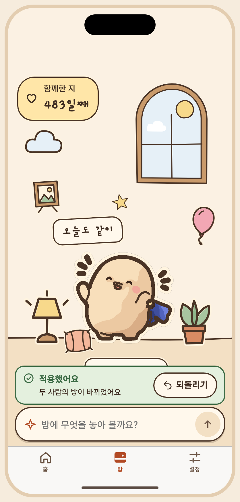
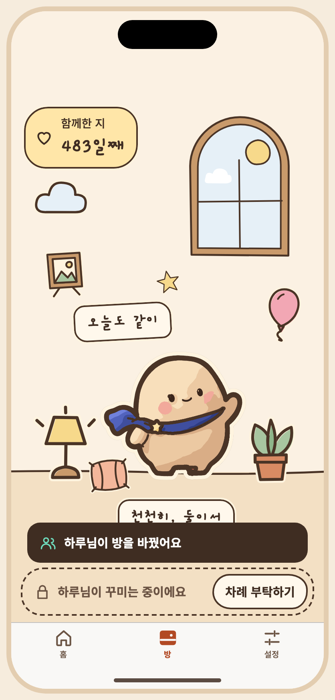

아티팩트 정본의 저장소 미러 · 버전 1794274258-930a · 생성 파일은 수정하지 마세요. 상태 명세와 PNG는 아티팩트에 비해 오래되었을 수 있습니다. 아티팩트





# S10 되돌리기 — 적용 직후 한 줄
승인자: 미승인
승인일: 미정
## 목적, ID, 경로
ID: S10
Route: /prompt (dialog)
## 디자인 원본
- [S10-undo.dc.html](../../../canvas/project/S10-undo.dc.html)
## 이미지
- [S10-ready__ios-day-light-ko.png](../../../exports/S10-ready__ios-day-light-ko.png)
- [S10-done__ios-day-light-ko.png](../../../exports/S10-done__ios-day-light-ko.png)
- [S10-busy__ios-day-light-ko.png](../../../exports/S10-busy__ios-day-light-ko.png)
- [S10-ended__ios-day-light-ko.png](../../../exports/S10-ended__ios-day-light-ko.png)
- [S09-applied__ios-day-light-ko.png](../../../exports/S09-applied__ios-day-light-ko.png)
- [S09-partner-applied__ios-day-light-ko.png](../../../exports/S09-partner-applied__ios-day-light-ko.png)
## 상태와 상호작용
> **2026-11-10 · 꾸미기 독으로 바뀌었어요.** 아래 설명과 상태 표의 일부는 2026-10 설계(꾸미기 시트 · 적용 확인 화면) 기준으로 남아 있어요. 지금 흐름은 방 아래 작은 독 + 방 위 미리 보기이고, 오너가 2026-11-10에 정한 규칙은 ① 적용 직후 방 위 ‘적용했어요 · 되돌리기’ 한 줄(한 단계 · 다시 적용 없음 · 다음 요청, 방 탭을 떠날 때, 3분 유휴에 끝남) ② 차례 부탁하기 · 넘겨주기 ③ 독의 ‘오늘 n번 남음’이에요. 현재 상태 목록은 캔버스 보드를, 규칙은 [interaction notes](../../../interaction-notes.md) §4–§6 · §9 · §14와 [spec](../../../../specs/001-couple-prompt-todo/spec.md)의 FR-011 · FR-013 · FR-028 · FR-030 · FR-031을 따르세요. 위 이미지는 현재 보드에서 다시 뽑았어요.
- **캔버스 보드**: `S10-undo`
- **목적**: 꾸민 사람이 방금 적용한 변경을 한 번 되돌려요. 적용하면 독이 닫히고 방 위에 ‘적용했어요 · 되돌리기’ 한 줄이 떠요(확인 창 없음). 진행, 성공(적용하기 전 방), 그새 방이 바뀜(충돌), 실패, 끝남, 상대 화면.
- **이동**: S09의 적용하기 → 방 위 한 줄(`S09-applied` = `S10-ready`) → 되돌리기 → 같은 자리에서 진행·결과.
- **한 단계만, 다시 적용(redo) 없음.** 서버는 바로 앞 버전을 새 버전으로 다시 적용해요(기대 버전 + 멱등 키).
- **끝나는 때**: 다음 요청을 보내거나, 방 탭을 떠나거나, 3분 동안 쉬면 한 줄이 사라져요(30초 경고 없음). 그때까지 점유는 꾸민 사람에게 있어서 상대 입력창은 ‘{이름}님이 꾸미는 중이에요 · 차례 부탁하기’로 잠겨 있어요(`S09-partner-applied`). 차례를 넘겨주면 되돌리기도 거기서 끝나요.
- 되돌리기는 꾸민 사람만 할 수 있어요. 상대에게는 버튼이 없고 ‘{이름}님이 되돌렸어요’ 한 줄만 가요(`S10-busy`).
- 미리 보기 사이를 오가는 것(적용 전)은 되돌리기가 아니라 이번 대화 기록의 ‘이걸로 다시 보기’예요(`S08-mine`).
- **긴 문구·언어 사례**: 한 줄은 두 줄까지 늘어나고 버튼은 같은 줄 오른쪽에 남아요.
| 상태 ID | 설명 | 사용하는 키 | 그린 조합 |
|---|---|---|---|
| `S10-ready` | 적용 직후 한 줄 · 되돌리기 버튼 (= `S09-applied`) | `preview.applied.title` `chat.applied.body` `chat.undo` `chat.undo.a11y` | iOS·낮·밝게·ko, iOS·밤·어둡게·ko |
| `S10-progress` | 되돌리는 중 · 같은 버튼 자리에서 진행 | `preview.applied.title` `chat.applied.body` `undo.progress` | iOS·낮·밝게·ko, iOS·밤·어둡게·ko |
| `S10-done` | 되돌렸어요 · 적용하기 전 방 | `undo.done.title` `undo.done.body` | iOS·낮·밝게·ko, iOS·밤·어둡게·ko |
| `S10-busy` | 상대 화면 · 한 줄 알림만 | `prompt.msg.status.undone` | iOS·낮·밝게·ko, iOS·밤·어둡게·ko |
| `S10-conflict` | 그새 방이 바뀜 · 되돌리지 않고 지금 방 | `undo.conflict.title` `undo.conflict.body` | iOS·낮·밝게·ko, iOS·밤·어둡게·ko |
| `S10-error` | 되돌리기 실패 · 방은 적용한 그대로 · 다시 시도 | `undo.err.title` `undo.err.body` `common.retry` | iOS·낮·밝게·ko, iOS·밤·어둡게·ko |
| `S10-ended` | 끝 · 다음 요청, 방 탭을 떠남, 3분 유휴 뒤 한 줄이 사라짐 | (문구 없음) | iOS·낮·밝게·ko, iOS·밤·어둡게·ko |
## 이동 및 뒤로
F03: S07 → S08 → S09 → 적용 후 S07; S09 → S10 → 이전 미리보기; 필요 시 S12 동의. 뒤로: 대화/시트 또는 확인을 닫고 이전 단계로. 취소 시 방은 유지.
## 접근성
상태 표에 나열된 `a11y.*` 키를 스크린 리더 이름으로 사용합니다. 공통 접근성 및 200% 글자 규칙은 [interaction notes](../../../interaction-notes.md#10-접근성-상호작용)를 참조하세요. TODO: 해당 상태에 명시되지 않은 역할과 이름을 확인하세요.
## 수락 시나리오
- [ ] S10-AC-01: 적용 직후 한 줄에서 되돌리면 적용하기 전 방으로 돌아가고(한 단계, 다시 적용 없음) 상대에게 한 줄로 알린다.
## 열린 질문 / 추적
TODO: 명세에 없는 disabled/offline 상태의 적용 여부와 정확한 뒤로 대상을 확인하세요. 시나리오와 요구사항·테스트·실행 결과는 [추적표](../../traceability.md)에 연결하세요.
| Key | 한국어 | English · draft G4 | 日本語 · draft G4 |
|---|---|---|---|
| a11y.dday | 함께한 지 {n}일째, 2025년 6월 29일부터 | Day {n} together, since June 29, 2025 | 一緒に過ごして{n}日目、2025年6月29日から |
| a11y.mascot | 아루미, {pose} | Aroomi, {pose} | アルーミ、{pose} |
| a11y.pose.wave_main | 인사하고 있어요 | waving | 手を振っています |
| a11y.presence | 꾸미기 상태: {state} | Decorating status: {state} | 飾り付けの状態：{state} |
| chat.undo | 되돌리기 | Undo | 元に戻す |
| chat.undo.a11y | 적용하기 전 방으로 되돌리기 | Undo and go back to the room before applying | 反映する前の部屋に戻す |
| common.cancel | 취소 | Cancel | キャンセル |
| common.confirm | 확인 | OK | OK |
| common.retry | 다시 시도 | Try again | もう一度試す |
| date.since | 2025년 6월 29일부터 | since June 29, 2025 | 2025年6月29日から |
| dday.count | {n}일째 | Day {n} | {n}日目 |
| dday.eyebrow | 함께한 지 | Together | 一緒に過ごして |
| preview.apply | 적용하기 | Apply | 反映する |
| preview.badge | 미리 보기 · 아직 적용되지 않았어요 | Preview · not applied yet | プレビュー · まだ反映されていません |
| preview.cancel | 취소 | Cancel | キャンセル |
| preview.changes | 변경 내용 | Changes | 変更内容 |
| preview.changes.list | 쿠션 · 조명 · 별 추가 | Added a cushion, a lamp and a star | クッション・ランプ・星を追加 |
| preview.partner.readonly | 지금은 보기만 할 수 있어요 | You can only watch for now | 今は見ることだけできます |
| preview.partner.wait | {name}님이 적용할지 정하고 있어요 | {name} is deciding whether to apply it | {name}さんが反映するか決めています |
| preview.undo | 이전 미리 보기로 되돌리기 | Go back to the previous preview | 前のプレビューに戻す |
| preview.view.candidate | 미리 보기 | Preview | プレビュー |
| preview.view.current | 현재 방 | Current | 今の部屋 |
| prompt.mine | 내가 꾸미는 중 | You're decorating | あなたが飾っています |
| prompt.msg.status.undone | {name}님이 되돌렸어요 | {name} undid it | {name}さんが元に戻しました |
| prompt.partner | {name}님이 꾸미는 중 | {name} is decorating | {name}さんが飾っています |
| prompt.title | 함께 꾸미기 | Decorate together | いっしょに飾る |
| sample.partner | 하루 | Haru | ハル |
| undo.conflict.body | 지금 방을 불러왔어요. | We loaded the current room. | 今の部屋を読み込みました。 |
| undo.conflict.title | 방이 그새 바뀌어서 되돌리지 못했어요 | The room changed in the meantime, so it couldn't be undone | その間に部屋が変わったため、元に戻せませんでした |
| undo.done.body | 적용하기 전 방으로 돌아왔어요. | The room is back to how it was before. | 反映する前の部屋に戻りました。 |
| undo.done.title | 되돌렸어요 | Undone | 元に戻しました |
| undo.err.body | 방은 적용한 그대로예요. 다시 시도해 주세요. | The room is still as applied. Please try again. | 部屋は反映したままです。もう一度お試しください。 |
| undo.err.title | 되돌리지 못했어요 | Couldn't undo | 元に戻せませんでした |
| undo.progress | 되돌리는 중이에요 | Undoing | 元に戻しています |